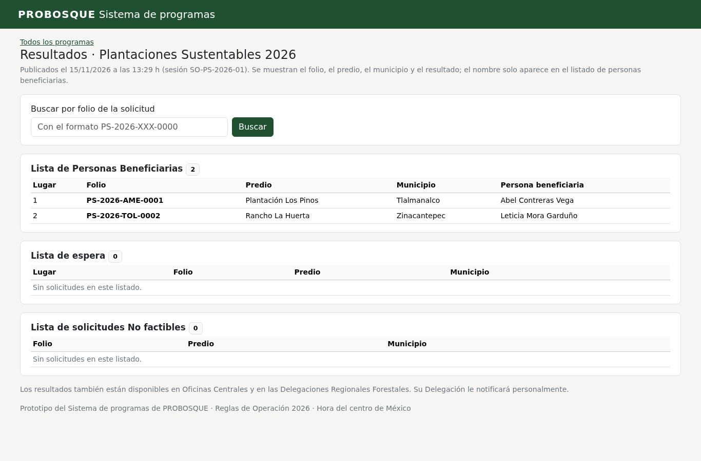
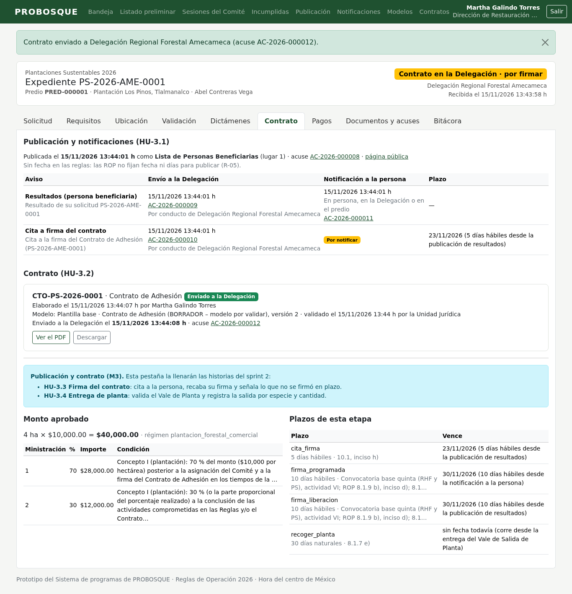
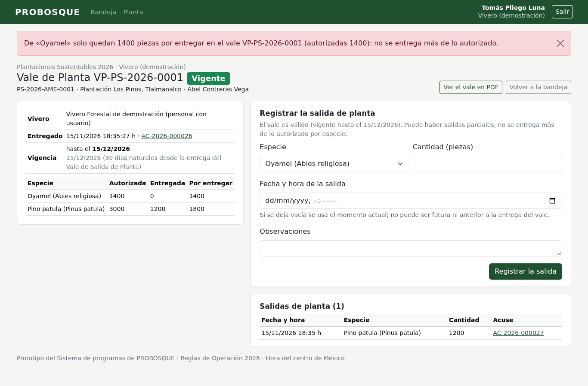
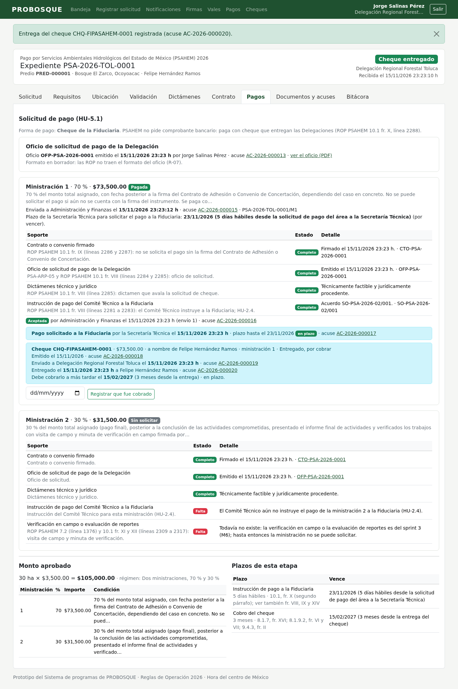
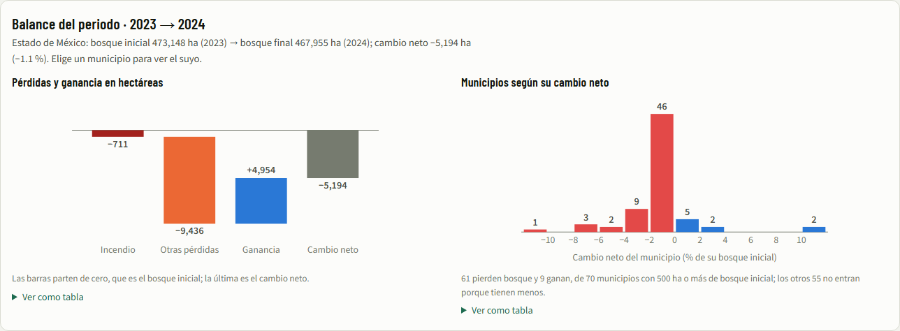

PROBOSQUE · Programas 2026 · Prototipos
Qué se agregó al sistema en el segundo prototipo, cómo quedaron cubiertas sus necesidades, qué se encontró en las Reglas de Operación y qué falta.
| Prototipo | Contrato y pagos (módulos M3 y M5); balance e incendios (M7.2 y M7.3) |
| Construcción | 14 al 16 de noviembre de 2026; ajustes por las observaciones del profesor, 24 y 25 de noviembre |
| Historias | 9 de 26 (37 de 112 puntos); con el sprint 1, 18 de 26 |
| Repositorio | github.com/Zavjosh05/FEPI, rama sprint-2 (el sprint 2 con los ajustes del 23 de noviembre; la rama prototipos trae el sistema completo) |
| Autor | Joshua Zavaleta |
| Antecedente | Resumen del sprint 1 (entregas/sprint_1/Resumen_sprint_1.pdf) |
El sprint 1 dejó el trámite hasta la sesión de aprobación del Comité: recepción, expediente, polígono, validación, dictámenes y acta, con un núcleo común de reglas como datos, estados con tabla de transiciones, bandejas por unidad, días hábiles, bitácora y acuses. Se había demostrado con un solo programa, Capturando Carbono.
Este sprint atiende la parte del trámite donde el apoyo se formaliza y se paga, que es donde las necesidades levantadas concentran tres problemas:
La arquitectura es la del sprint 1 (Django con GeoDjango, PostgreSQL con PostGIS, HTMX, Docker Compose). Lo nuevo está en tres lugares:
| Pieza | Qué es | Por qué |
|---|---|---|
| Reglas de cuatro programas | Se extrajeron de las Reglas de Operación las de PS, RHF y PSAHEM, igual que las de Capturando Carbono: requisitos, plazos, montos y ministraciones, cada dato con su numeral y su línea del texto. | La entrega de planta es de PS y RHF y los cheques son de PSAHEM: con un solo programa este sprint no se podía demostrar. |
| Notificaciones en el núcleo | Un solo servicio registra el envío a la Delegación y la notificación a la persona, cada uno con fecha, hora, medio y acuse. | La usan los faltantes, los resultados, la cita a firma y el aviso de pago; antes vivía solo en la recepción. |
| Plazos con su evento de arranque | Cada plazo que el sistema calcula se configura por programa: qué plazo de las reglas usa y desde qué hecho corre. Si el hecho aún no ocurre, el vencimiento es «sin fecha todavía». | Las Reglas cuentan el mismo plazo desde hechos distintos según el programa (sección 5). |
| Monto aprobado | Un servicio calcula el monto del apoyo y sus ministraciones con la superficie aprobada y las reglas del programa. | Lo usan los listados del Comité, el contrato y los pagos, con la misma cifra. |
Módulos contrato y pagos | Dos apps nuevas, con un archivo de código, sus tablas y sus pruebas por historia. | Cada historia se construyó, probó y registró por separado. |
El sistema pasó de 33 a {{tablas}} tablas. El diagrama entidad-relación, generado desde el código, tiene ahora cinco
áreas (sistema/docs/modelo_datos.md).
Se construyeron completos los módulos M3 Publicación y contrato y M5 Pagos, y las funciones M7.2 y M7.3 de la Calculadora. De los pagos se demuestra de punta a punta la primera ministración; la segunda depende de la verificación en campo, que es del sprint 3.
En verde, los estados que agregó este sprint; en ámbar, los flujos alternos. Cada flecha dice qué unidad puede hacer el paso y, cuando es propio de un programa, cuál. El vale de planta solo existe en PS y RHF, y los cheques, solo en PSAHEM.
sequenceDiagram
autonumber
participant A as Dirección (área responsable)
participant J as Unidad Jurídica
participant D as Delegación
actor P as Persona beneficiaria
participant V as Vivero
participant F as Adm. y Finanzas
participant S as Secretaría Técnica
participant B as Fiduciaria
A->>A: Publica los listados que autorizó el Comité (acuse)
A->>D: Avisos de resultado y cita a firma
D->>P: Notifica (fecha, hora, medio y acuse)
J->>A: Valida el modelo de contrato
A->>D: Elabora el contrato y lo envía (acuse)
P->>D: Firma el contrato
D->>D: Registra la firma y verifica firmas y sello (acuse)
opt PS y RHF
D->>P: Entrega el vale de planta (vigencia)
P->>V: Presenta el vale
V->>V: Registra la salida por especie y cantidad (acuse)
end
D->>A: Oficio de solicitud de pago
A->>F: Solicitud de la ministración con sus soportes (acuse)
alt Capturando Carbono, PS y RHF
F->>F: Acepta y registra el pago por transferencia
F->>D: Aviso de pago
D->>P: Notifica el pago
else PSAHEM
F->>S: Acepta la solicitud
S->>B: Solicita el pago en 5 días hábiles (acuse)
B->>D: Emite el cheque y lo envía
D->>P: Entrega el cheque (3 meses para cobrarlo)
end
| Paso | Quién | Qué deja |
|---|---|---|
| Publicación de resultados | Área responsable del programa | Listados publicados, acuse y el hecho que arranca los plazos |
| Notificación a la persona | Delegación | Fecha, hora, medio y acuse de la entrega del aviso |
| Modelo de contrato | Área responsable y Unidad Jurídica | Versión validada, con fecha, hora y observaciones |
| Elaboración y envío del contrato | Área responsable | Contrato en PDF y acuse del envío a la Delegación |
| Firma | Delegación | Fecha y hora de la firma, contrato firmado y verificación de firmas y sello |
| Vale y salida de planta | Delegación y vivero | Vale con su vigencia; salidas por especie, cantidad y fecha |
| Oficio y solicitud de pago | Delegación y área responsable | Solicitud con todos sus soportes y acuse del envío |
| Pago | Administración y Finanzas | Pago asociado a su solicitud, con fecha |
| Remisión y cheques (PSAHEM) | Secretaría Técnica, Fiduciaria y Delegación | Fecha de remisión; cheque emitido, enviado y entregado |




Historia por historia: qué pide cada criterio de aceptación, cómo quedó resuelto y qué necesidades atiende. Los identificadores empiezan con la clave del programa y siguen con el rol: DRF Delegación, ARP área responsable (DPF en Guardabosques), UJ Unidad Jurídica, VIV vivero, AF Administración y Finanzas, FID Fiduciaria, COM Comité, BEN persona beneficiaria, PSF prestador de servicios forestales, DEV equipo desarrollador.
«Atendida» significa que al menos una de las funciones que la cubren se construyó en este sprint; «completa», que ya no le falta ninguna función de un sprint posterior. El anexo A las lista una por una y el anexo B reúne las capturas de cada historia.
Extraer las reglas de tres programas más y construir sobre ellas sacó a la luz diferencias entre el texto y lo que se había supuesto. Todas están en la bitácora con su numeral y su línea; estas son las que cambiaron el diseño:
| Tema | Qué dicen las Reglas | Qué se hizo |
|---|---|---|
| Plazo de firma del contrato | Son 10 días hábiles, pero la Convocatoria y la causa de baja los cuentan desde hechos distintos, y no igual en cada programa: en Capturando Carbono, publicación y notificación; en PS, al revés. | Se llevan dos fechas por programa: la programada de firma y el vencimiento para liberar el recurso. La baja, que es una sanción, se aplica con su propia regla. |
| Documentación faltante | Los 5 días hábiles corren desde la recepción de la solicitud, sin pasar de la fecha límite de recepción; para el aviso posterior de la Dirección no hay número de días. | Se agregó el plazo de ventanilla que faltaba; el de la Dirección se conserva como decisión propia, parametrizada. |
| Vale de planta | PS da «30 días» sin decir si son hábiles y no prevé reponer un vale vencido; RHF da 15 días hábiles y sí lo repone si hay planta. | Vigencia y reposición son datos por programa; en PS la pantalla lo dice citando la regla. |
| Verificación en campo | Los plazos de 15, 30 y 10 días hábiles (Capturando Carbono, PS y RHF) son para entregar el documento de verificación, no para hacer la visita. | Queda anotado para el sprint 3, que construye la verificación. |
| Pago en PSAHEM | El pago se solicita a la Fiduciaria a través de la Secretaría Técnica del Comité Técnico, en 5 días hábiles; la historia lo ponía en Administración y Finanzas. | Administración y Finanzas acepta la solicitud y la Secretaría Técnica remite. Pendiente de confirmar con el cliente. |
| PTRFI de RHF | Lo entrega la persona solicitante con la solicitud; un prestador con registro puede elaborarlo. | Es un requisito más del expediente, no una entrega aparte del prestador. |
| Formatos y fechas que no están | No vienen el modelo de contrato, el oficio de pago ni los formatos de verificación; tampoco hay plazo en días para publicar, pagar o reintegrar. | Plantillas en borrador que valida la Unidad Jurídica; donde no hay plazo, la pantalla dice «sin fecha en las reglas». |
Decisiones tomadas con Joshua en este sprint: el desecho de una solicitud por faltantes vencidos y la liberación de un recurso por falta de firma los confirma una persona (el sistema los prepara y los señala, no los ejecuta solo); la consulta pública de resultados no pide cuenta; y el portal del sprint 3 usará una cuenta creada al firmar el contrato, con folio y código como respaldo.

| Comprobación | Resultado al cierre del sprint |
|---|---|
| Pruebas automáticas del sistema | {{pruebas_sistema}} en verde; al cierre del 16 de noviembre, las 432 de entonces también con todos los documentos PDF reales |
| Pruebas de la Calculadora | {{pruebas_calculadora}} en verde |
| Recorrido completo por servicios | Una solicitud por programa (Capturando Carbono, PS, RHF y PSAHEM), de aprobada a la primera ministración pagada, comprobando en cada relevo estado, bandeja, acuse, bitácora y fechas |
| Recorrido completo por la interfaz | Con clics y cambio de usuario en cada relevo: PS, de aprobada al pago, con vale y planta; y PSAHEM, de contrato firmado al cheque entregado |
| El sprint 1, con cuatro programas | El recorrido de recepción y dictamen corre ahora en los cuatro programas con reglas, no solo en uno |
| Bordes de los plazos | 26 pruebas con un reloj simulado: para cada plazo que el sistema calcula, el último momento válido y el primero inválido, con fines de semana y días inhábiles en medio. Ningún cálculo resultó incorrecto |
| Volumen | Con cientos de solicitudes generadas con semilla, las bandejas, los listados y la página pública responden con un número fijo de consultas; se corrigió la única pantalla que hacía una consulta por renglón |
| Tiempo de la batería | En paralelo: rápidas {{tiempo_rapidas}}; completa {{tiempo_completa}}. En serie, al inicio del cierre, tardaban unos 10 y 14 minutos |
| Capturas | {{capturas}} imágenes en entregas/sprint_2/capturas/ |
Los recorridos por la interfaz encontraron tropiezos de navegación, no errores de lógica: seis en el sprint 1 y nueve en este (por ejemplo, un folio que llevaba a una pantalla desde la que no se podía registrar la entrega del aviso, o un menú que ya no cabía en la pantalla). Todos están en la bitácora y se corrigieron dentro del sprint.
En la revisión del 23 de noviembre el profesor hizo seis observaciones al sprint 1. Se atendieron primero en la rama del sprint 1 y el 24 de noviembre se integraron en esta rama, extendiéndolas a la publicación, el contrato y los pagos, porque la baja, la lista de espera y el historial ya no terminan en el acta del Comité. Nada cambió el alcance de las nueve historias de este sprint ni sus puntos.
| Observación | Qué se hizo |
|---|---|
| Cada observación de la validación debe hacerse correctamente (HU-1.4) | Cada requisito faltante lleva la observación de la Dirección, obligatoria; el aviso de faltantes, la notificación y la pestaña Requisitos la muestran. |
| Falta el documento que expide el dictamen técnico y el jurídico (HU-2.1 y HU-2.2) | Cada dictamen expide su documento en PDF, con folio DT- o DJ-, firmas y huella, adjunto al expediente. |
| Recordar la parte jurídica sobre la propiedad (HU-2.2) | El dictamen jurídico revisa la acreditación de la propiedad o legal posesión del predio; sin ella no puede ser procedente. |
| El criterio de HU-2.4 está mal; título de reasignaciones o manejo de incidentes | HU-2.4, «Reasignaciones e incidentes»: cada incidente tiene su acuerdo, causa, expedientes y área; la persona que sale queda dada de baja y entra la siguiente de la lista de espera, en su orden, sin rebasar el recurso liberado. Con el sprint 2, la baja procede en cualquier etapa anterior a la primera ministración solicitada: dada de baja, la persona ya no firma, no recibe contrato ni vale y no cobra; el recurso liberado por no firmar en plazo se reasigna igual; la reasignación se publica con el acta de la sesión de seguimiento. |
| Lista de candidatos en una vista distinta de la de beneficiarios (HU-2.3) | Menú «Listados» con Candidatos y Beneficiarios; Beneficiarios sigue a la persona en la publicación, el contrato y el pago y muestra las bajas. |
| Registros para la trazabilidad en la base de datos (todas las historias) | Criterio de trazabilidad en las siete historias de M3 y M5 (y en las de M1 y M2); el historial de cada tabla de contrato y pagos registra siempre al usuario y se ve en la pestaña «Trazabilidad» del expediente. |
Con esto el sistema pasó a 59 tablas y la batería de pruebas, de 432 a 473 en verde (442 sin navegador y 31 recorridos con el
navegador), con los recorridos completos del sprint 2 sin cambios. El detalle, con las historias antes y ahora, está en
Registro_de_cambios_observaciones_23_nov.pdf y en el renglón D-30 de entregas/BITACORA.md.
entregas/BITACORA.md registra cada propuesta,
hallazgo y decisión con su estado; entregas/AVANCE.md, cada tarea con su commit.Sprint 3, ejecución, seguimiento y cierre. Faltan 8 historias (39 puntos): envío de comprobaciones por la persona beneficiaria y su portal, verificación en campo, evaluación de reportes de Guardabosques, lista de espera y sustituciones, incumplimientos y reintegros, cierre del ejercicio con el padrón, y en la Calculadora el uso del suelo al que pasó el terreno perdido y las especies por municipio. Con la verificación se conecta la segunda ministración.
sistema/ y, de la Calculadora, src/ y
docs/calculadora/. Cómo levantar y probar, usuarios de demostración y decisiones:
sistema/README.md. Reglas de cada programa: sistema/reglas/. Avance:
entregas/AVANCE.md. Propuestas, hallazgos y decisiones: entregas/BITACORA.md. Datos del
inventario forestal: entregas/sprint_2/investigacion_infys.md.Las funciones que faltan indican en qué sprint se completa cada necesidad.